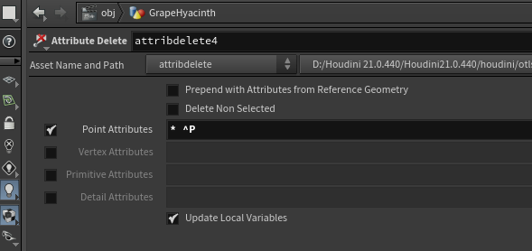
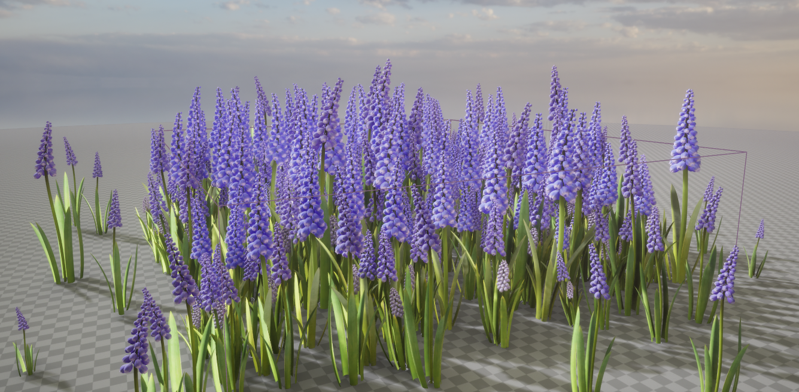
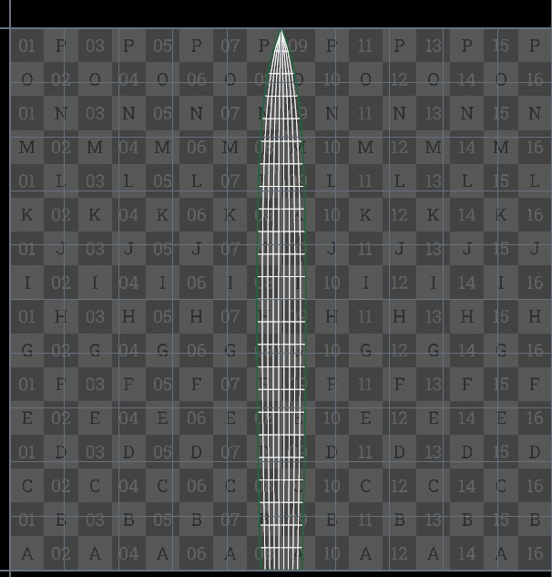

第 8 周
已完成：
待办事项：
-
研究 Unreal Engine 中的 shader 流程
-
为镜头 3 尝试不同的布局
-
把葡萄风信子转成粒子版本
-
优化镜头 3 的布局，让它看起来更真实
这周我主要专注在用 VAT（particle sprites）把葡萄风信子转成粒子。



要成功输出 VAT 粒子，每个粒子都必须有有效的 ID 属性。未使用的属性也要删除，以免输出出错。输出前要先快取模拟，否则过程会变得非常慢。
问题：
粒子版葡萄风信子的一个问题是，我们需要粒子分布在体积内部，而不只是表面。但在 Houdini 中使用 Points from Volume 时，产生的点每一格都会改变，导致生长动画不稳定、明显抖动。为了解决这个问题，Yichen 和我用 Claude 探索了不同的解法，Craig Fowler 也帮我们找到更稳定的做法。
解法：
我们先在 Houdini 中用 TimeShift 把几何体锁定在第一格，再用 IsoOffset 转成体积。为了避免体积中出现多余的线状瑕疵，需要提高 Uniform Sampling Divs 的数值。在体积内散布点之后，再用 Point Deform 把这些点从冻结的几何体转回原本有动画的模型上。

PCG：
为了让葡萄风信子的虫视角看起来真实，所有植物都要维持在一致的地面高度。Ben 协助我们在 Unreal Engine 中用 PCG 自动产生布局，并调整摄影机位置来加强真实感。布局是用 Spawn Actor 和 Transform Points 建立的，能把四种不同的葡萄风信子变体分布在指定范围内。


UV：
一开始叶子的 UV 没有填满 UV 格，导致贴图在 Unreal Engine 中看起来模糊。我调整并放大 UV，让它们填满可用的空间，贴图清晰度因此改善。


-
优化葡萄风信子和叶子的材质